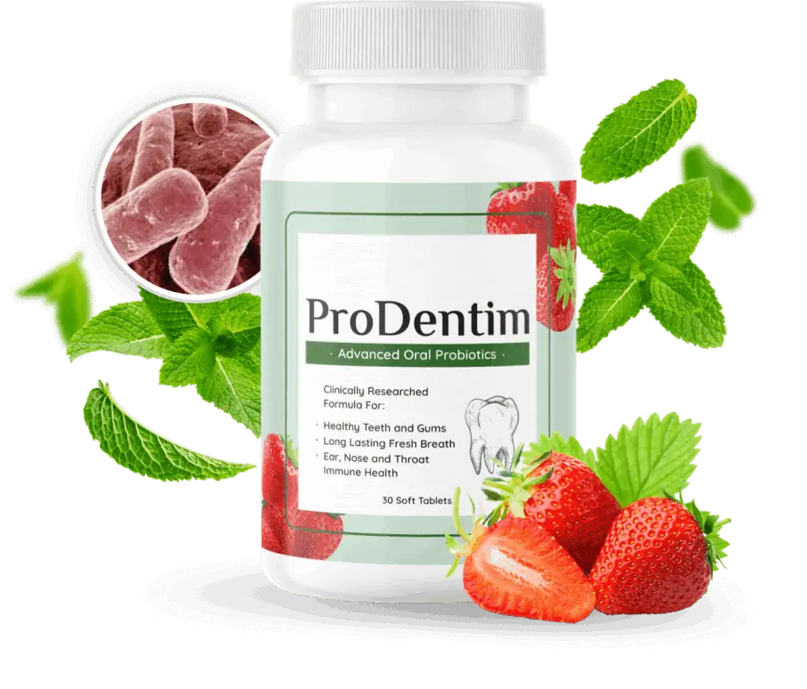
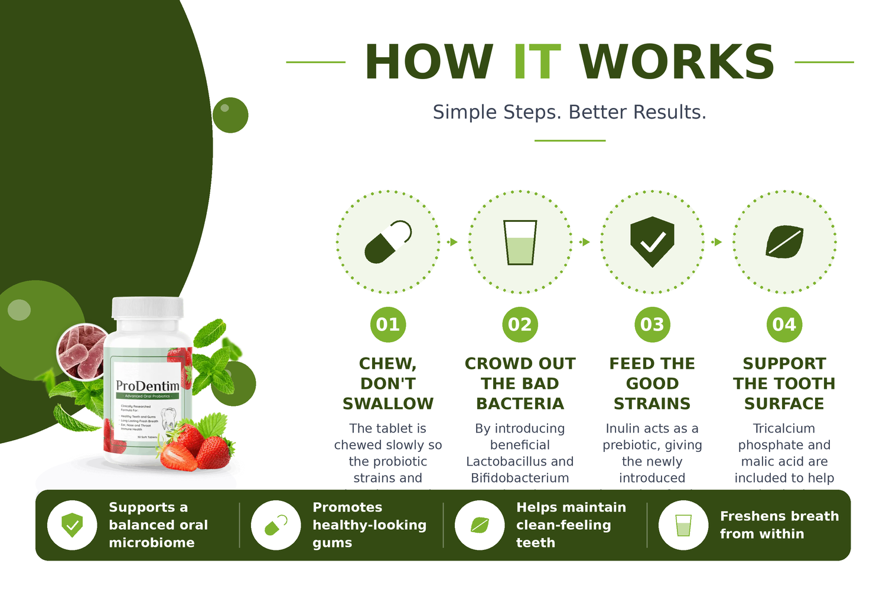
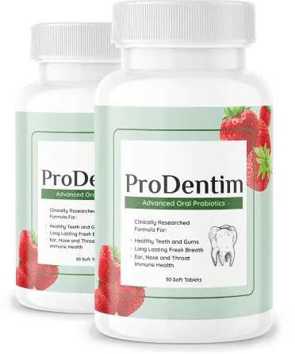
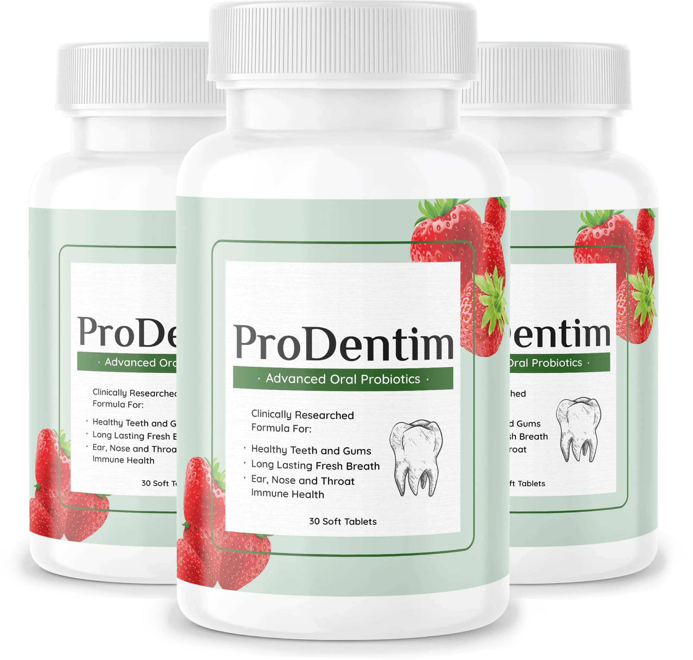
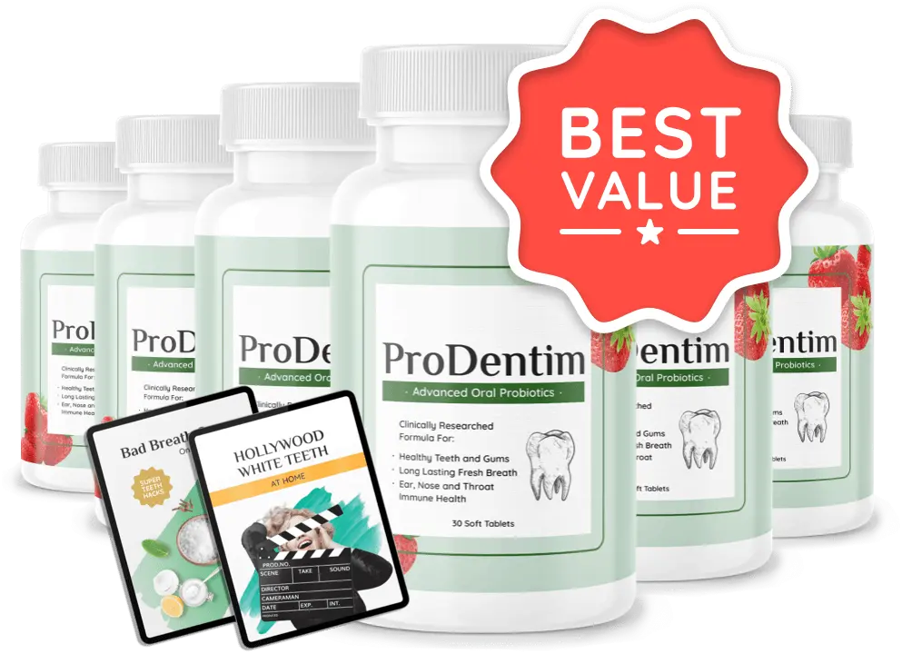

Why Choose ProDentim
Built On Quality You Can Verify
Made In The USA
Strict quality control
Registered Facility
FDA-registered plant
GMP Certified
Good Manufacturing Practice
Naturally Sourced
Thoughtfully chosen ingredients
ProDentim is a chewable dietary supplement built around the idea that a healthy mouth depends on a healthy balance of bacteria. Instead of relying on brushing and flossing alone, it delivers a blend of probiotic strains plus select nutrients directly to the oral environment, aiming to support teeth and gums from the inside out. Each tablet is meant to be chewed slowly so the ingredients can coat the mouth, and the formula is positioned as part of a daily oral-care routine rather than a replacement for it.

Strict quality control
FDA-registered plant
Good Manufacturing Practice
Thoughtfully chosen ingredients

ProDentim is a Oral Probiotics / Dental Health Supplement formulated with 7 named ingredients.
| Product | ProDentim |
|---|---|
| Category | Oral Probiotics / Dental Health Supplement |
| Ingredients | 7 named ingredients |
| Daily Serving | 1 chewable tablet |
| Guarantee | 60 days |
| Price Range | $49–$69 per bottle |
Each ingredient explained individually below.
A probiotic bacterium commonly used in oral and dental supplements; included to help populate the mouth with beneficial flora that support gum and tooth comfort.
A well-studied probiotic strain frequently found in mouth and gut formulas, chosen to help maintain a balanced oral microbiome and support healthy gum tissue.
A hardy probiotic species included to complement the Lactobacillus strains and help sustain a favorable bacterial environment in the mouth.
A soluble plant fiber that acts as food for the probiotic strains, helping them establish and thrive after the tablet is chewed.
A naturally occurring acid used in oral-care products to help maintain a favorable pH balance in the mouth and support a clean-feeling smile.
A calcium-phosphate mineral often used in dental products to help support the mineral content and surface strength of teeth.
Provides the chewable tablet's cooling mint flavor while helping the mouth feel clean and refreshed after each use.
ProDentim works by seeding the mouth with live Lactobacillus and Bifidobacterium strains, feeding them with inulin, and supporting the tooth surface with tricalcium phosphate so the oral environment stays balanced.
The tablet is chewed slowly so the probiotic strains and minerals spread across the teeth, gums and cheeks instead of passing straight to the stomach.
By introducing beneficial Lactobacillus and Bifidobacterium strains, the formula aims to shift the balance of the mouth's microbiome in a healthier direction.
Inulin acts as a prebiotic, giving the newly introduced bacteria a food source so they can settle in rather than wash away.
Tricalcium phosphate and malic acid are included to help maintain the mineral environment and pH balance that keep teeth feeling clean and strong.
Supportive wellness benefits — not promised medical outcomes.
Delivers live probiotic strains that aim to keep the mouth's bacterial mix healthy and stable.
The Lactobacillus and Bifidobacterium strains are chosen to help gums stay comfortable and firm.
Tricalcium phosphate and malic acid work with brushing to support a fresh, smooth smile.
Peppermint plus a balanced bacterial environment target the source of everyday mouth odor.
A chewable format that fits alongside brushing and flossing as an extra layer of support.
A pleasant mint chewable tablet is simple to work into mornings or evenings without water.
Individual experiences vary. These reflect personal opinions, not guaranteed outcomes.

I keep the bottle by the sink and chew one after brushing — my mouth just feels cleaner and less stale in the mornings now.
Took about a month of daily use before I noticed my gums weren't as tender when I flossed, but I'm sticking with it.
The mint flavor is genuinely nice, and it's the only supplement I've actually remembered to take every single day.
Larger bundles reduce the cost per bottle.




Every order is backed by a 60-day money-back window, so if the chewables don't fit your routine you can contact support within that period and ask for a refund.
It is a chewable dietary supplement formulated with probiotic strains, prebiotic inulin and oral-care minerals, designed to support teeth and gums by balancing the mouth's microbiome.
The formula centers on Lactobacillus Paracasei, Lactobacillus Reuteri and Bifidobacterium Lactis, alongside inulin, malic acid, tricalcium phosphate and peppermint for flavor and freshness.
Chew one tablet slowly each day rather than swallowing it whole, so the ingredients can coat the mouth. Keep it part of your normal brushing and flossing routine.
Because it works on the mouth's bacterial balance, most people treat it as a gradual process and give it several weeks of consistent daily use before judging results.
The ingredients are common in oral and probiotic products, but anyone who is pregnant, nursing, taking medication or managing a health condition should check with a doctor first. Stop use if you notice any irritation.
It is intended for adults. Children, pregnant or nursing women, and anyone with a compromised immune system or known sensitivity to probiotic or mint ingredients should consult a healthcare professional before use.
Packages are sold in 2, 3 and 6-bottle bundles at $69, $59 and $49 per bottle respectively, with totals of $138, $177 and $294.
Yes — orders are typically covered by a 60-day refund window, so you can try the formula and request a refund through customer support if it isn't right for you.
No. Dietary supplements are not approved by the FDA; this product is manufactured in facilities that follow standard supplement manufacturing practices, and it is not intended to diagnose, treat or cure any condition.
No. ProDentim is designed as a complement to your existing oral-care habits, not a substitute for brushing, flossing or regular dental checkups.
Give your mouth a probiotic boost it can actually stick with — pick up ProDentim today and chew your way toward a fresher, more balanced smile.